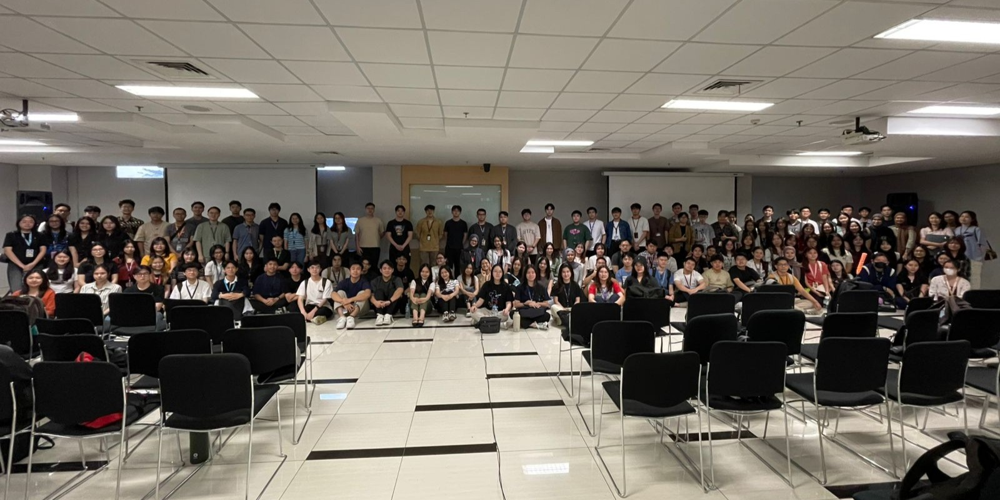
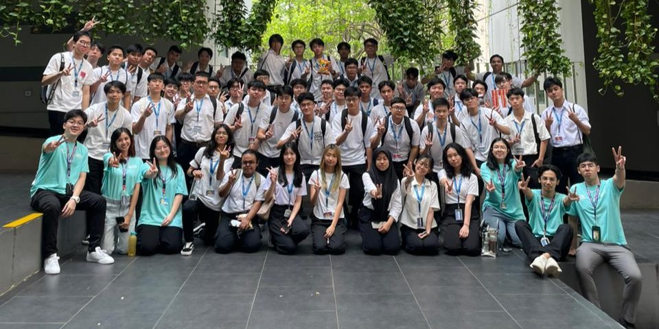
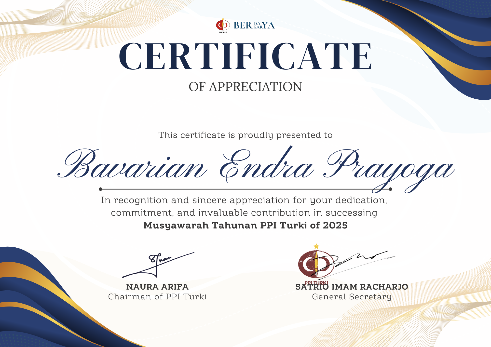

about me
Computer Science undergraduate at BINUS University with a passion for cybersecurity, artificial intelligence, and backend development. Currently specializing in Intelligent Systems,
I'm driven by the challenge of creating secure and intelligent solutions for tomorrow's technological landscape. I aim to contribute to developing robust, AI-driven security
solutions that can adapt to evolving threats.
what do i look like
my projects
Currency Forecast — A Streamlit web app that uses LightGBM to predict exchange rates
with interactive charts and confidence intervals for 100+ currency pairs using exchange-api by fawazahmed0.
Fashion Recommendation — Fashion recommendation system that uses CNN model (MobileNetV3) and K-Nearest
Neighbor algorithm to give outfit recommendations based on provided images using camera or image files.
Rendezvous — Social hangout discovery platform that combines social context with practical group planning tools. Built with Next.js and Appwrite.
leadership & organizational experiences
Mentor, Student Learning Partner
BINUS University | Feb 2025 - Jun 2025

- Selected as a mentor based on academic performance to guide and tutor up to 10 fellow college students in their studies.
- Developed supplementary learning materials and hosted weekly review sessions.
- Awarded a scholarship in recognition of academic excellence and dedication to peer support.
Freshmen Leader (FL), First Year Program (FYP) Orientation Binusian 2028
BINUS University | Jul 2024

- Facilitated the onboarding of 10 assigned freshmen as part of a team of 6 Freshmen Leaders, collectively guiding a class of 60 new students during university-wide orientation week.
- Led campus tours, coordinated team-building activities, and served as the primary point-of-contact for student inquiries.
- Ensured a positive and welcoming environment, fostering a sense of community among incoming freshmen.
Liaison Officer, Collaborative Program Development
BINUS University & PPI Turki (Indonesian Students' Association in Turkey) | Dec 2024 - Feb 2025

- Acted as the primary communication bridge between BINUS University and PPI Turki to facilitate cross-cultural and academic collaborations.
- Facilitated multi-stage negotiations and planning sessions, presenting initial concepts to university leadership and relaying feedback between stakeholders.
- Awarded a certificate of participation by PPI Turki in recognition of dedicated efforts in fostering inter-organizational collaboration.
Technical Administrator, Bina Talenta Program
BINUS University & Bina Talenta | September 2025 - Present
- Provide real-time technical administration for virtual seminars on the Zoom platform, facilitating sessions held three times per week for up to 200 participants.
- Manage key platform functionalities, including breakout rooms, polls, Q&A sessions, and speaker screen sharing, to ensure a seamless and interactive event experience.
- Troubleshot audio/visual issues for speakers and attendees, maintaining the professional flow of the program.